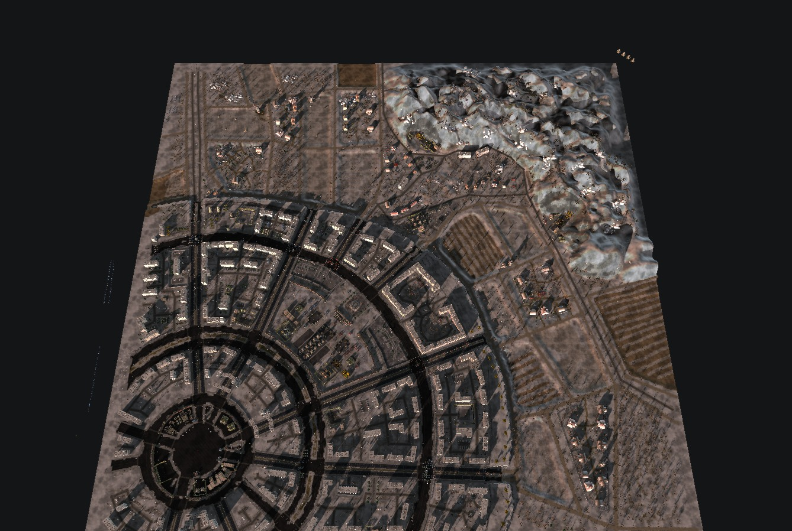
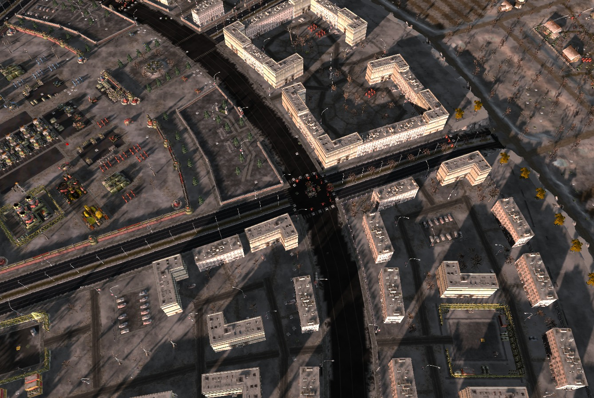
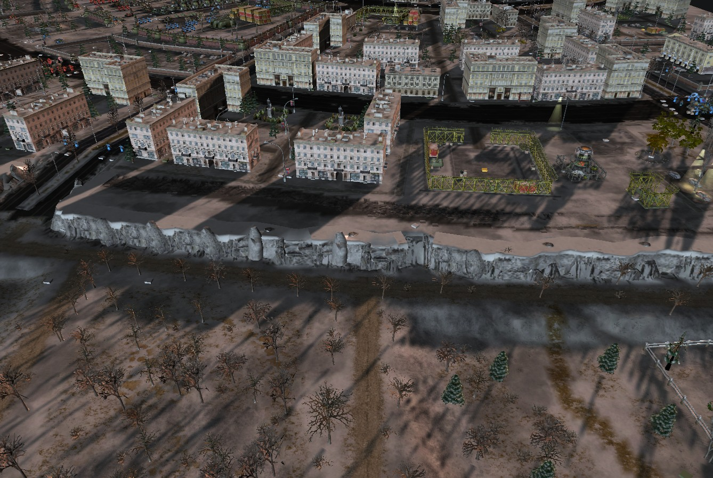
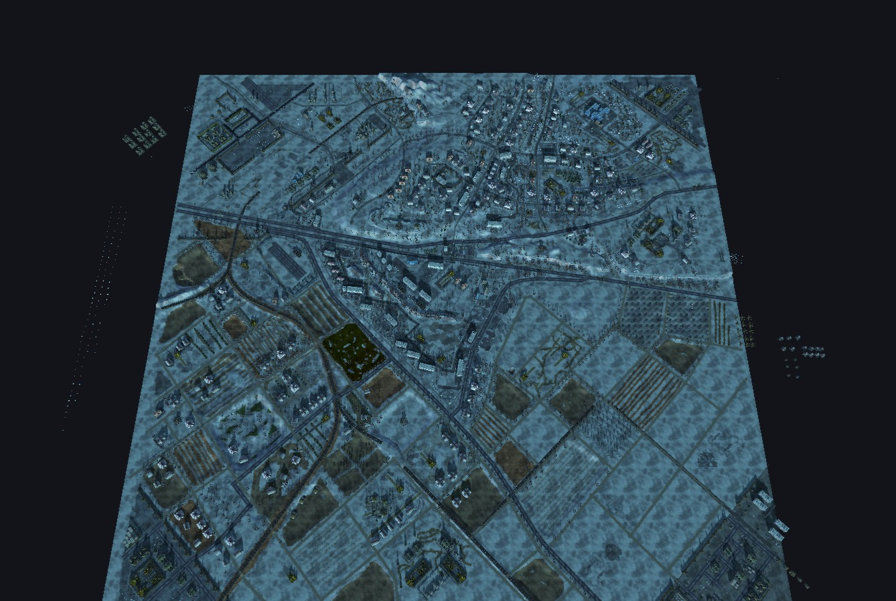
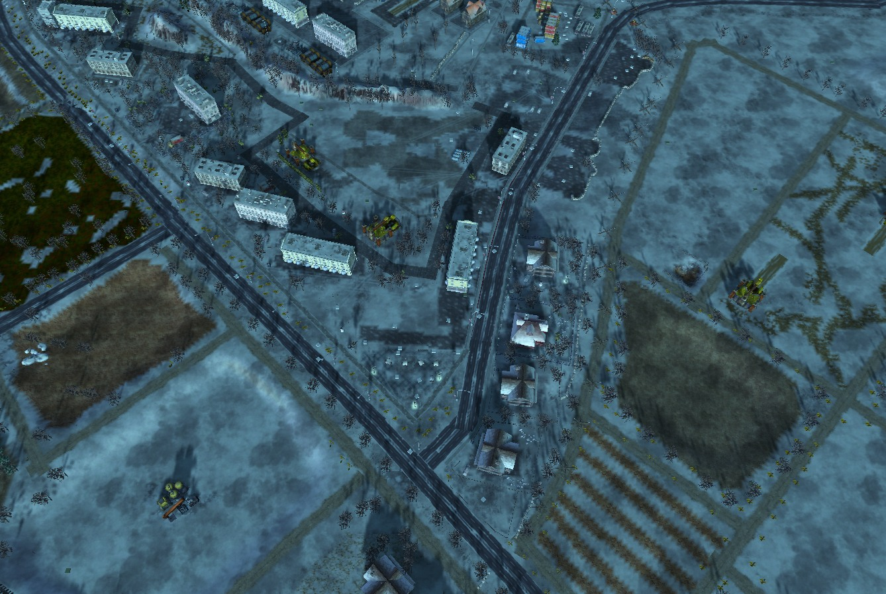
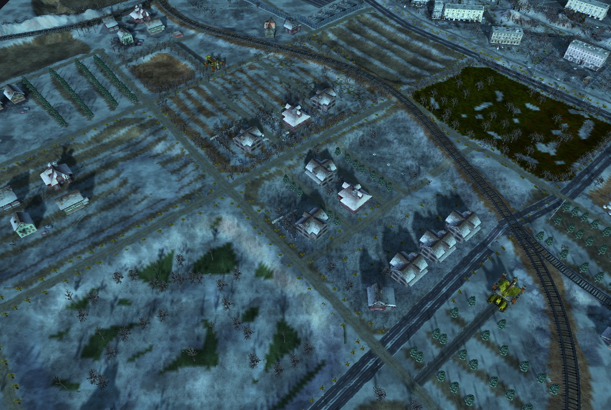
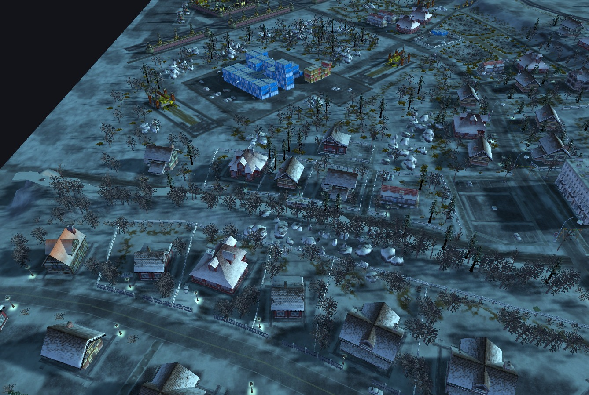
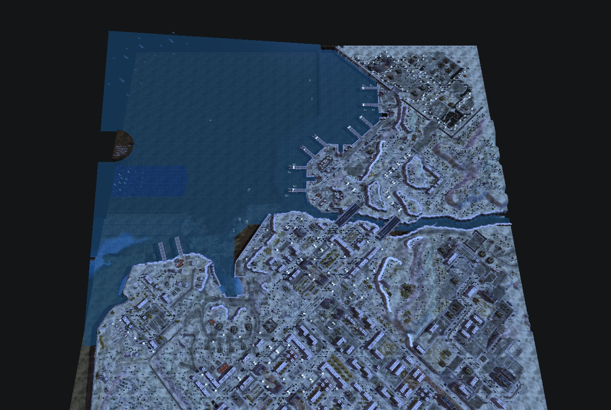
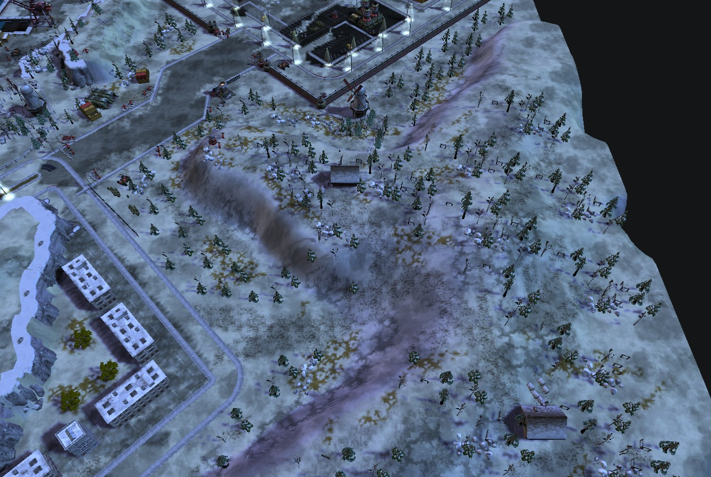
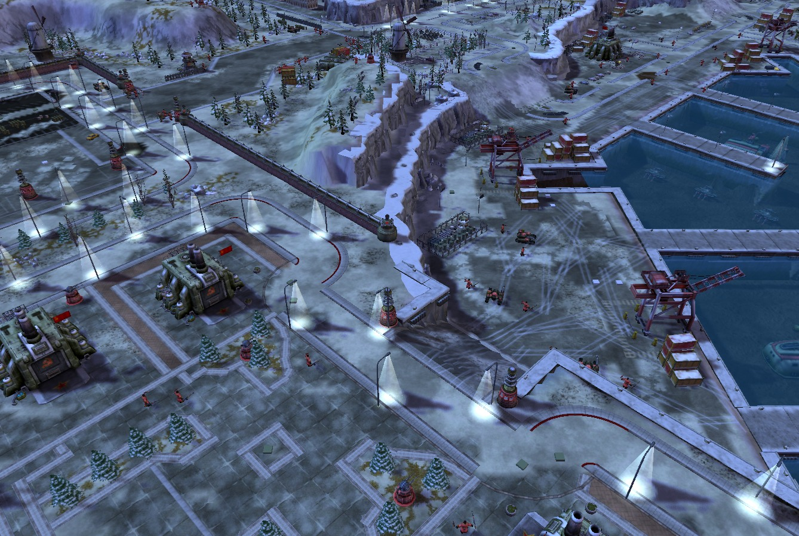

悬崖、纹理与街区美化 · v4
80 张验证过的地图，10,981 个悬崖物件，135 种真实模型几何。以下是 12 个重点案例的 33 张编辑器图、6 张空间诊断、原点示意与 3 张边缘实验。观察位置关系和功能，不照搬密度或瑕疵。地图数据成功不代表游戏内已验证。
哈尔科夫 · m053 · winter-city

overview先看街区、开放地形和边界；不学习任务军队的密度。
诊断视图：临时关闭雾与 Bloom，原图未改；不是游戏实测画面。
city-streetVL 系列围合街区。入口与公路相接，院落保持留白。
诊断视图：临时关闭雾与 Bloom，原图未改；不是游戏实测画面。
cliff-face看崖顶落点、向下延伸、段间高程和接缝。外露条带或柱状凸出需复核。
诊断视图：临时关闭雾与 Bloom，原图未改；不是游戏实测画面。明斯克 · m054 · winter-mixed

overview先看街区、开放地形和边界；不学习任务军队的密度。
诊断视图：临时关闭雾与 Bloom，原图未改；不是游戏实测画面。
city-blockSV 住宅与少量 VL 建筑沿交通骨架组合；并非每栋房屋都单独成围栏圈。
诊断视图：临时关闭雾与 Bloom，原图未改；不是游戏实测画面。
village-yard村屋、林缘、雪地空隙；港城任务也包含城市区，不整图当乡村模板。
诊断视图：临时关闭雾与 Bloom，原图未改；不是游戏实测画面。
cliff-face看崖顶落点、向下延伸、段间高程和接缝。外露条带或柱状凸出需复核。
诊断视图：临时关闭雾与 Bloom，原图未改；不是游戏实测画面。俄国村庄任务 · m049 · winter-village

overview先看街区、开放地形和边界；不学习任务军队的密度。
诊断视图：临时关闭雾与 Bloom，原图未改；不是游戏实测画面。
village-yard村屋、林缘、雪地空隙；港城任务也包含城市区，不整图当乡村模板。
诊断视图：临时关闭雾与 Bloom，原图未改；不是游戏实测画面。
cliff-face看崖顶落点、向下延伸、段间高程和接缝。外露条带或柱状凸出需复核。
诊断视图：临时关闭雾与 Bloom，原图未改；不是游戏实测画面。海德堡 · m071 · central-europe
米科诺斯 · m079 · mediterranean
边缘细化的实际实验
同一张独立测试图、同机位。自动向外改 84 格；单边只改 1 格。撤销与保存重开通过。这个方形地块用于展示算法，不是自然纹理构图模板。